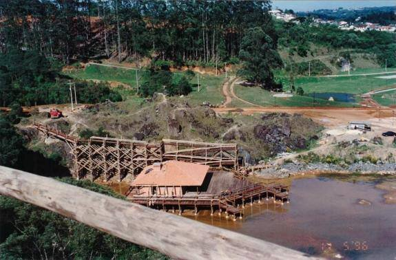

SOBRE
O Parque Tanguá fica em Curitiba, nos bairros Taboão e Pilarzinho. Ele abre todo dia das 6h às 20h, de graça. O local tem 235 mil metros quadrados, dois lagos, uma cascata e um mirante famoso para ver o pôr do sol. Foi construído em 1996 em cima de antigas pedreiras desativadas.

HISTORIA
Inaugurado em 23 de novembro de 1996, o Parque Tanguá ocupa a área de duas antigas pedreiras desativadas da família Gava. O local originalmente seria destinado à construção de uma usina de reciclagem de lixo industrial. No entanto, o projeto foi redirecionado pela Prefeitura de Curitiba para reabilitar o espaço degradado e transformar o passivo ambiental em uma grande área de lazer. Preservação e Impacto Ambiental: Com 235 mil m², o parque preserva importantes trechos de mata nativa, protege a bacia do Rio Barigui e desempenha um papel fundamental no controle de enchentes da região, consolidando-se como um dos cartões-postais mais famosos da cidade.

CULTURA
Inaugurado em 23 de novembro de 1996, o Parque Tanguá ocupa a área de duas antigas pedreiras desativadas da família Gava. O local originalmente seria destinado à construção de uma usina de reciclagem de lixo industrial. No entanto, o projeto foi redirecionado pela Prefeitura de Curitiba para reabilitar o espaço degradado e transformar o passivo ambiental em uma grande área de lazer. Preservação e Impacto Ambiental: Com 235 mil m², o parque preserva importantes trechos de mata nativa, protege a bacia do Rio Barigui e desempenha um papel fundamental no controle de enchentes da região, consolidando-se como um dos cartões-postais mais famosos da cidade.

CURIOSIDADES
Origem do nome
Tanguá" vem do tupi-guarani e significa "cobras d'água
Queda d'água artificial
A imponente cascata de 65 metros de altura não é natural; a água é bombeada do lago inferior até o mirante para criar o espetáculo visual.
Ciclovia Integrada
O parque conta com pistas para ciclistas interligadas à rede de ciclovias da cidade, permitindo o deslocamento de bike até o Parque Tingui e o Parque Barigui.